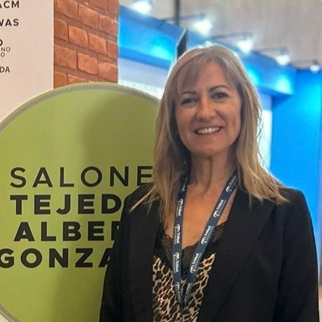

MARCELA ANDREA BARBERO
LIC. En TERAPIA OCUPACIONAL recibida en la Universidad Nacional de Mar del Plata (UNdMdP) en el año 1999.
Durante estos 25 años me ido formando y especializando en la rehabilitación de patologías que afectan el Miembro Superior y la mano formando parte de Capitulo Argentino de Terapia De Mano desde el año 2000.
Diplomada en Gestión de la Ergonomía. UNICEN, 2021.
Diploma de Especialización en Terapia de Mano basada en la Evidencia y en el Razonamiento Clínico. Universidad Internacional de Andalucía (UNIA). España. 2022-2023.
Miembro Titular del Capitulo Argentino de Terapistas de la Mano (CATM)
Vicepresidente del CATM año 2025. Presidente 2026-2027
Desempeño laboral actual:
- Hospital Municipal Dr. Héctor Cura. Olavarría, desde el año 1999.
- CIAME (Centro Integral de Afecciones Musculo esqueléticas. (Consultorio Privado)